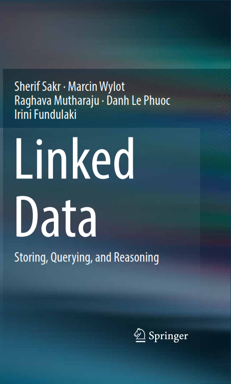

Tutorial on Linked Data: Querying, Reasoning, and Benchmarking
18th International Semantic Web Conference (ISWC 2019)
October 26-27, 2019. The University of Auckland, New Zealand
Overview
Linked Data allows meaningful links to be created between pieces of data on the Web. Adoption of Linked Data technologies has shifted the Web from a space of connecting documents to a global space where pieces of data from different domains are semantically linked and integrated to create a globalWeb of Data. While small amounts of Linked Data can be handled in-memory or by standard relational database systems, big Linked Data graphs, which we nowadays have to deal with, are very hard to manage. Modern Linked Data management systems have to face large amounts of heterogeneous, inconsistent, and schema-free data. The aim of this tutorial is to provide a comprehensive overview of the state-of-the-art in linked data storage techniques, static/streaming query processing mechanisms, scalable reasoning approaches, and benchmarking.
The material of this tutorial is based on the book "Linked Data: Storing, Querying, and Reasoning"

Tutorial Schedule
- Introduction (9:00-9:10)
- Centralized RDF Query Processing (9:10-10:10)
- Distributed RDF Query Processing (Part I) (10:10-10:30)
- Coffee break (10:30-11:00)
- Distributed RDF Query Processing (Part II) (11:00-11:30)
- Streaming RDF Query Engines (11:30-12:30)
- Lunch break (12:30-13:30)
- Scalable RDF Reasoning (13:30-14:30)
- Benchmarking RDF Engines (Part I) (14:30-15:00)
- Coffee break (15:00-15:30)
- Benchmarking RDF Engines (Part II) (15:30-16:30)
- Open Challenges (16:30-17:00)
Presenters
Sherif Sakr
Sherif Sakr is the Head of Data Systems Group at the Institute of Computer Science, University of Tartu, Estonia. He received his PhD degree in Computer and Information Science from Konstanz University, Germany in 2007. Sherif is an ACM Senior Member and an IEEE Senior Member. In 2017, he has been appointed to serve as an ACM Distinguished Speaker and as an IEEE Distinguished Speaker. He is currently serving as the Editor-in-Chief of the Springer Encyclopedia of Big Data Technologies. He can be contacted at sherif.sakr@ut.ee.
Raghava Mutharaju
Raghava Mutharaju is an Assistant Professor in the Computer Science and Engineering department of the Indraprastha Institute of Information Technology, Delhi (IIIT-D), India. He got his PhD in Computer Science and Engineering from Wright State University, Dayton, OH, USA, in 2016 working under the supervision of Prof. Pascal Hitzler. He has worked in Industry research labs such as GE Research, IBM Research, Bell Labs, and Xerox Research. His research interests are in Semantic Web and Big Data. He co-organized workshops at WWW 2019, WebSci 2017, ISWC 2015 and tutorials at IJCAI 2016, AAAI 2015 and ISWC 2014. He can be contacted at raghava.mutharaju@iiitd.ac.in.
Danh Le Phuoc
Danh Le Phuoc is a Marie Sklodowska-Curie Fellow at the Technical University of Berlin, Germany. He received his PhD in Computer Science from the National University of Ireland. He is working on Pervasive Analytics which includes Linked Data/Semantic Web, Pervasive Computing, Future Internet, and Big Data for Internet of Everything. He gave tutorials on Linked Stream Data Processing at the Reasoning Web Summer School 2012 and Tutorial Sessions at WWW 2013. He co-organised Stream Reasoning workshops and RDF Stream Processing workshops. He is a regular PC member of ISWC, ESWC and WWW conferences. He can be contacted at danh.lephuoc@tu-berlin.de.

Irini Fundulaki
Irini Fundulaki is a Principal Researcher at the Institute of Computer Science of the Foundation for Research and Technology-Hellas, Greece. She received her PhD in Computer Science from the Conservatoire National des Arts et Metiers, Paris, France in 2003. Irini's research interests are related to Web Data Management and more specifically the development of benchmarks for RDF engines, instance matching and link discovery systems, the management of provenance for Linked Data, access control for RDF datasets, bias in online information providers and data integration. She has authored a large number of articles and journals and has served as chair of 3 international workshops. She can be contacted at fundul@ics.forth.gr.